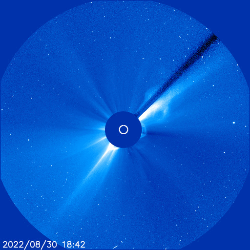
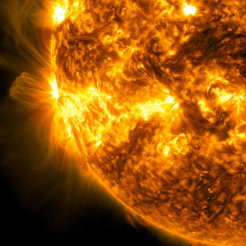

The Physics of the Solar Corona:
A Review of Current Understanding
Abstract:
This article will explore the composition, temperature, and structure of the Sun's corona, the dynamic processes that occur within it, and the tools and techniques used by scientists to study it. We will delve into the corona’s role in solar wind production, its connection to solar phenomena such as Coronal Mass Ejections (CMEs) and solar flares, and the importance of solar eclipses and space-based observatories in unraveling the mystery of this enigmatic layer. Through this exploration, we will appreciate the profound impact the corona has on both our scientific understanding and practical life on Earth.

Introduction
The ethereal glow of the solar corona, visible only during the fleeting moments of a total solar eclipse, captivates observers with its haunting beauty. With its delicate tendrils of plasma stretching outwards into the void of space, the corona is one of the most enigmatic phenomena in the universe. Despite being the outermost layer of the Sun’s atmosphere, it remains a scientific mystery, with scientists continually striving to understand its secrets.
The solar corona is a fascinating and paradoxical feature of our Sun’s atmosphere, located beyond the Sun’s visible surface, where temperatures soar to millions of degrees, far exceeding that of the Sun's surface. The corona’s composition, temperature, and dynamic behavior are essential to understanding not only the Sun itself but also the space weather that affects our planet and solar system.
The Sun’s Mysterious Outer Layer:
What is the Corona?
The corona is the outermost layer of the Sun’s atmosphere, extending millions of kilometers into space. Despite being so far from the Sun’s surface, it has been found to be much hotter, with temperatures reaching up to 1-3 million degrees Celsius, whereas the surface temperature of the Sun (the photosphere) is approximately 5,500 degrees Celsius. This temperature discrepancy has baffled scientists for decades, as one would expect the temperature to decrease with distance from the core, not increase. This paradoxical temperature increase, called the "coronal heating problem," is a central mystery in solar physics.
The corona is composed mainly of ionized gases, primarily hydrogen and helium, which exist in a plasma state—an ionized form of matter where electrons are separated from atoms, creating a sea of charged particles. This plasma is the same substance that constitutes much of the Sun’s interior and outer layers. Despite its low density, the corona emits an intense amount of energy, which is why it can be seen during a solar eclipse.
Composition:
The corona is made up of highly ionized gases—primarily hydrogen (about 91%) and helium (8%), along with trace amounts of heavier elements such as oxygen, carbon, neon, and iron. These gases are in a plasma state, which allows them to conduct electricity and be influenced by magnetic fields. The plasma within the corona is relatively sparse compared to the dense core of the Sun, but it is incredibly hot. The corona's composition, though similar to other layers of the Sun, is distinct in that it contains high-energy particles that contribute to solar phenomena such as solar wind and coronal mass ejections.
In addition to the common elements, the solar corona’s temperature and density result in highly charged ions. These ions are an essential part of solar activity and space weather, interacting with the solar magnetic field and playing a crucial role in phenomena like solar flares and CMEs. One of the most intriguing aspects of the corona’s composition is that it contains fewer particles than the Sun’s lower layers, yet the plasma’s temperature is far higher, which only deepens the mystery of its behavior.

The sun's magnetic fields over an image of our star captured by NASA’s Solar Dynamics Observatory (Image credit: NASA/SDO/AIA/LMSAL/Goddard)
Structure:The corona’s structure is complex and influenced significantly by the Sun’s magnetic field. It is often divided into two primary regions: the inner corona and the outer corona.
- Inner Corona: The inner region of the corona extends from the Sun's surface to a distance of about 2-3 solar radii. It has a relatively uniform appearance but is intricately shaped by the Sun’s magnetic fields. The magnetic field lines channel the plasma, creating regions of concentrated activity.
- Outer Corona: The outermost layer extends far beyond the Sun’s surface, into interplanetary space, where the Sun's magnetic influence gradually weakens. The outer corona exhibits a more diffuse, less structured appearance. It is in this outer region that the solar wind begins to flow outwards, carrying charged particles across the solar system.
The Sun's magnetic field plays a crucial role in shaping the corona. Magnetic loops, created by the solar magnetic field, cause the plasma to move in highly organized ways. These loops can be observed as prominences—large arcs of plasma suspended above the Sun’s surface. The magnetic field also plays a role in solar flares and CMEs, as it governs the release of energy from the corona.
The Corona’s Dynamic Behavior
Solar Wind: The solar wind is a constant stream of charged particles emitted from the Sun’s corona. It is composed mostly of electrons, protons, and alpha particles, and it moves at varying speeds, generally between 300 and 800 kilometers per second. This wind is not uniform; it fluctuates in intensity and speed based on the Sun’s activity cycle. During periods of high solar activity (solar maximum), the solar wind is typically stronger and more variable.
This stream of charged particles extends throughout the solar system, interacting with the magnetic fields of planets, moons, and spacecraft. The solar wind is responsible for creating the auroras on Earth as it interacts with our planet’s magnetic field, funneling charged particles toward the poles and creating beautiful light displays. Additionally, the solar wind's influence on Earth’s magnetosphere is a central aspect of space weather. It can induce geomagnetic storms when the solar wind is particularly strong or when it contains a disturbance, such as a CME.
While the solar wind is a constant phenomenon, its variability can lead to disruptions in satellite communications, GPS systems, and even power grids. Understanding the solar wind is, therefore, crucial not only for space science but also for protecting Earth’s technological infrastructure from space weather events.
Coronal Mass Ejections (CMEs): Coronal Mass Ejections (CMEs) are among the most significant and dramatic solar phenomena, far surpassing the solar wind in terms of intensity and potential impact. A CME is a massive burst of solar wind and magnetic fields rising from the Sun's corona and moving outward into space. Unlike the steady, continuous stream of the solar wind, CMEs are explosive events that release billions of tons of plasma into space, often traveling at speeds of up to 3,000 kilometers per second—much faster than the typical solar wind.
The fundamental cause of CMEs is the Sun’s complex magnetic field. The corona is dominated by magnetic loops that arise from sunspots, where magnetic fields are particularly concentrated. When these magnetic loops become unstable—due to twisting, shearing, or other dynamic processes—energy is suddenly released in the form of a CME. This release occurs as the magnetic field lines reconnect and realign, expelling massive amounts of plasma into space. These ejections are often associated with solar flares, but they can occur independently.
The size and impact of a CME can vary dramatically. Some CMEs are relatively small and have minimal effect on Earth, while others can be extraordinarily large, carrying enough energy to affect the entire solar system. When a CME reaches Earth, it can interact with our planet's magnetic field, leading to geomagnetic storms. These storms can disrupt communications, satellite operations, navigation systems, and even cause power outages by inducing electrical currents in power lines. The severity of the effects depends on the orientation of the magnetic field within the CME and how it interacts with Earth's own magnetic field.
The potential for CMEs to impact Earth is a primary reason why scientists closely monitor the Sun's activity. Instruments on spacecraft like SOHO and the Parker Solar Probe, along with ground-based observatories, allow for real-time tracking of solar flares and CMEs. These observations are essential for space weather forecasting and early warning systems, which can help mitigate the impact of a CME on Earth-based technology.

Solar Flares: Solar flares are another dramatic manifestation of solar activity. A solar flare is an intense burst of radiation originating from the Sun’s corona, often associated with the release of magnetic energy from the Sun’s surface. Solar flares are more energetic than CMEs in terms of the amount of electromagnetic radiation they emit, but they do not involve the expulsion of plasma into space like CMEs do.
Solar flares occur when the magnetic fields in the Sun’s corona become twisted and tangled, often near sunspots. These magnetic fields, when destabilized, can release a burst of energy in the form of electromagnetic radiation, including radio waves, X-rays, and gamma rays. Solar flares can last from a few minutes to several hours, and their intensity can vary greatly.
The impact of solar flares on Earth is primarily felt in the form of disruptions to radio communications and satellite navigation systems. The X-rays and UV radiation from a flare can ionize the Earth’s ionosphere, making radio signals in certain frequencies (especially high-frequency radio waves) difficult to propagate. This can affect aviation, military communications, and other critical sectors. Additionally, the increased radiation during solar flare events can pose risks to astronauts in space and to spacecraft, especially those operating outside of Earth’s protective magnetosphere.
In some cases, solar flares and CMEs occur simultaneously, compounding their effects. The radiation from a flare can increase the intensity of the solar wind, and a CME can carry additional material and magnetic fields that interact with Earth's magnetosphere. This combined effect can lead to more severe geomagnetic storms and more significant disruptions to space-based and ground-based technology.
While each of these phenomena—solar wind, CMEs, and solar flares—is distinct, they are closely related and often occur together. The solar wind is the background flow of charged particles from the Sun’s corona, while CMEs and solar flares are more violent outbursts, with CMEs involving large-scale plasma ejections and solar flares emitting intense radiation. Both CMEs and solar flares are driven by the Sun’s magnetic activity and can significantly affect space weather. CMEs often contain highly energetic particles that can increase the density of the solar wind, intensifying the impact on Earth’s magnetosphere. When CMEs interact with the solar wind, they can trigger large-scale geomagnetic storms, resulting in more powerful auroras and greater disruptions to communications and satellite systems. On the other hand, solar flares, while not typically causing direct physical damage to satellites, can affect the ionosphere, making it difficult for radio signals to travel, and pose risks to astronauts in space. These events follow an 11-year solar cycle, with solar maximum being the period of greatest solar activity. During solar maximum, both CMEs and solar flares occur more frequently and with greater intensity. As the Sun's magnetic field reaches its maximum strength, the likelihood of large-scale solar phenomena increases, which in turn enhances space weather events on Earth.
NASA’s Solar Dynamics Observatory captured this image of a solar flare, visible as the bright flash on the left, on October 23, 2024. The image shows a portion of extreme ultraviolet light, which reveals the intense heat of the flare material, colorized here in orange for clarity. Credit: NASA/SDO
Observing the Corona
Total Solar Eclipses: One of the most spectacular ways to observe the solar corona is during a total solar eclipse. During an eclipse, the Moon passes directly between the Earth and the Sun, casting a shadow over the Earth and allowing the corona to be visible to the naked eye. The beauty of the corona during a solar eclipse, with its bright, intricate streamers of plasma extending outward from the Sun, has fascinated astronomers for centuries.
Solar eclipses have been critical in advancing our understanding of the Sun. For example, during an eclipse in 1869, the discovery of the element helium was made when spectral lines in the corona were analyzed. Such observations are difficult to achieve under normal conditions, as the Sun’s brightness overwhelms the faint light of the corona. Eclipses thus provide an invaluable opportunity for scientists to study the Sun's outer atmosphere and its magnetic activity.
Space-Based Observatories:In addition to ground-based observations during eclipses, space-based observatories like the Solar and Heliospheric Observatory (SOHO) and the Parker Solar Probe have revolutionized our understanding of the corona. SOHO, launched in 1995, has provided continuous observations of the Sun, especially its outer layers, enabling scientists to study solar phenomena such as the solar wind and CMEs in real-time.
The Parker Solar Probe, launched in 2018, is the first spacecraft to "touch" the Sun, traveling closer to the solar surface than any previous mission. By measuring the solar wind and magnetic fields in the corona, it aims to shed light on the long-standing question of why the corona is hotter than the Sun’s surface. These advanced space missions use a variety of instruments to observe the Sun in different wavelengths, from visible light to X-rays, revealing the dynamic processes within the corona.
Conclusion:
The solar corona, with its astonishing temperature and composition, remains one of the most captivating and mysterious features of our Sun. Through its dynamic processes, such as the solar wind, CMEs, and solar flares, the corona has profound effects on space weather and the technology we rely on. Understanding the corona’s structure and behavior is key to understanding the Sun’s influence on the solar system.,
Future Research: The study of the corona is still in its early stages, with ongoing research focused on unraveling its mysteries. Upcoming missions, such as the ESA’s Solar Orbiter and continued observations from the Parker Solar Probe, will provide even deeper insights into the corona’s magnetic activity and the mechanisms behind solar wind and flares. These advances will help protect technology and better understand space weather’s effects on Earth.
References:
1.Priest, E. R., & Forbes, T. G. (2002). Magnetic Reconnection: MHD Theory and Applications. Cambridge University Press.
2.Klimchuk, J. A. (2006). "On the Nature of Coronal Loops." Solar Physics, 234(1), 41-63.
3. Vourlidas, A., & Biesecker, D. A. (2006). "Coronal Mass Ejections and Their Impact on Space Weather." In Coronal Mass Ejections: An Overview (pp. 5-19). Springer.
4. ESA Solar Orbiter Mission(www.esa.int/Science_Exploration/Space_Science/Solar_Orbiter)
5.SDO Team. (2022). Solar Dynamics Observatory (SDO) Overview.